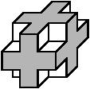

This module defines a region-of-interest with the shape of an axis-aligned 3D box. This box can be used to restrict the output of many visualization modules like VoltexLDA, OrthoSliceLDA, and ObliqueSliceLDA.
Connection to a 3D data object which defines the maximum size of the region-of-interest. Only the bounding box of the data object but not the data itself is interpreted by this module.
Voxels within the ROI are rendered; voxels outside the ROI are not rendered. The ROI box and the subvolume box are specified in slice coordinates. The limits are included in the ROI. The region defined by the ROI box always acts upon the region defined by the subvolume, not the entire volume. For example, in exclusion mode (see the Cropping port), the visible portion of the volume is the subvolume region minus the ROI box region. You are allowed to set the ROI box region larger than (or completely outside) the subvolume region, but only the intersection of the two regions is significant.
The crop box is defined by three sets of parallel planes that define three
slabs:
Four cropping options are available: Subvolume, Exclusion, Cross, and Fence.
Subvolume Displays voxels inside the ROI.
Exclusion Displays voxels outside the ROI.
Fence Displays voxels between:

Cross Displays voxels between:
(Figures courtesy Real Time Visualization)
Size of data in the region of interest in MBytes